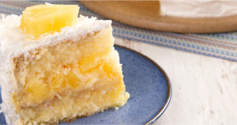

BOLO DE ABACAXI

- INGREDIENTES:
- 4 claras em neve e 4 gemas
- 1 1⁄2 xícara (chá) de açúcar
- 1 colher (sopa) de margarina
- 1 xícara (chá) de suco de casca de abacaxi
- 2 xícaras (chá) de farinha de trigo
- 1 colher (sopa) de fermento em pó
- Óleo ou margarina para untar
- MODO DE PREPARO
- Lave muito bem a casca do abacaxi e leve-a ao fogo com um pouco de água para ferver.Coe e reserve
- Bata as claras em neve e reserve.
- Coloque as gemas na batedeira e bata com o açúcar e a margarina. Depois, vá acrescentando aos poucos o suco e a farinha de trigo, até ter uma massa homogênea.
- Retire-a da batedeira e junte as claras em neve e o fermento apenas misturando, sem bater.
- Despeje a massa em uma assadeira untada com óleo ou margarina e farinha de trigo.
- Asse em forno a 170 °C por 25 minutos.
Sugestão: pode ser servido com uma calda feita com o suco da casca de abacaxi adoçado ou com o doce de casca de abacaxi.